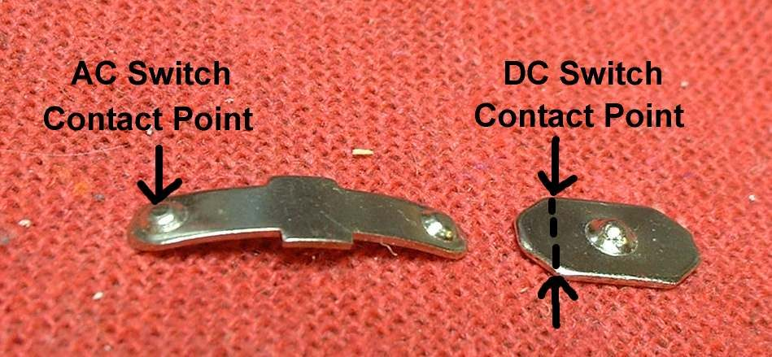
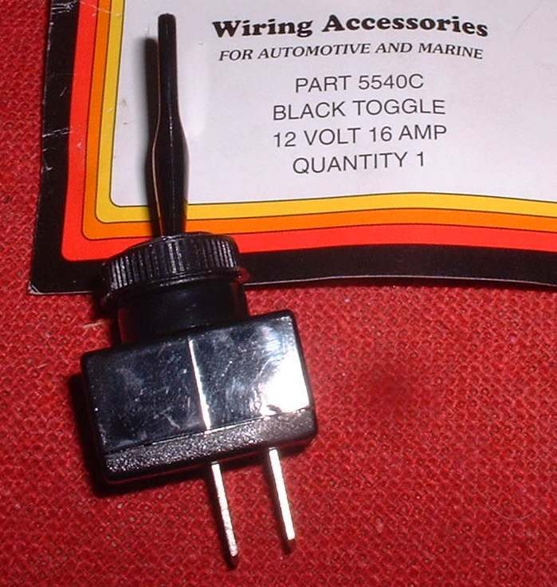
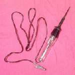
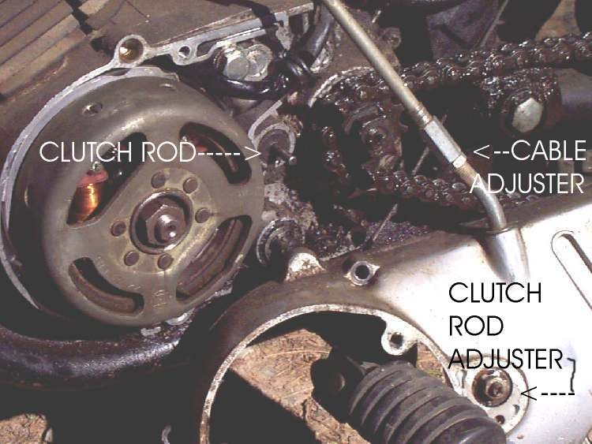

The starter does nothing, or the engine starts and stops, unless the bike is in neutral, the clutch is pulled, the side stand is up, or (on scooters) a brake lever is pulled. Often this is normal: safety switches (interlocks) stop the bike starting or running in a dangerous state. The fault is real when the bike refuses even with all conditions met, or when it works only if you wiggle the lever or stand. On the K-Light 125, the starter relay reaches earth through the clutch switch or, through a diode, the neutral switch, and the ECU reads the clutch, neutral and side stand switches (PDF pages 90 and 254).
Is it safe to ride?
Yes, once it starts normally. Never bypass a safety switch permanently: a bike that can start in gear may jump forward, and a stand left down can catch in a corner.
Quick checks first
- Neutral light ON, or clutch lever pulled all the way to the grip.
- Side stand fully up.
- Scooters and many step-throughs: pull a brake lever while pressing start.
- Engine stop switch on RUN.
- Look at the side stand switch for mud, a loose plug or a bent bracket.
Diagnose it step by step
1With neutral selected, stand up, clutch pulled (or brake pulled on a scooter), does the starter work?
- Yes: the bike is working as designed. Learn its rules from your owner's manual.
- No: go to step 2.
2Does the neutral light come on in neutral?
- No: the neutral switch or its wire may be faulty, so the bike does not know it is in neutral. See Neutral light does not work or stays on in gear and Test the neutral switch.
- Yes: go to step 3.
3In gear, with the clutch pulled fully, does the starter work?
- No: check clutch lever free play so the lever reaches the switch (Adjust clutch lever free play), then test the clutch switch (Test the side stand, clutch and neutral switches).
- Yes: go to step 4.
4Does the engine start, then stop when you select a gear with the stand UP?
- Yes: the side stand switch is faulty or its plug is loose. Test the side stand, clutch and neutral switches and Check the side stand.
- No: go to step 5.
5Does it work if you wiggle the switch wires or connectors?
- Yes: a poor contact. Clean and seal electrical connectors, or Find a wiring fault.
- No: the switches may be fine and the fault is elsewhere in the starter circuit: Nothing happens when I press the starter button.
Causes, most likely first
| Cause | How to confirm | Fix |
|---|---|---|
| Normal interlock rule not met | Works with all conditions set | No repair needed |
| Side stand switch dirty, loose or broken | Reading does not change when stand moves | Test the side stand, clutch and neutral switches |
| Clutch switch faulty or lever not reaching it | No change when lever pulled | Adjust clutch lever free play |
| Neutral switch faulty | Neutral light off in neutral | Test the neutral switch |
| Broken or corroded wire or connector | Works when wiggled | Clean and seal electrical connectors |